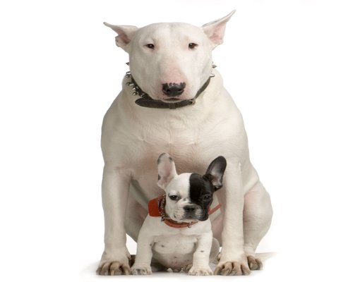

Bul Terijer
Nastanak Stafordskog bul terijera se vezuje za period 19. veka, kada su ljubitelji buldoga, podstaknuti popularnošću borbi pasa, odlučili da stvore rasu koja bi bila pravi pas za borbe. Ukrštajući rase koje su važile za najizdržljivije, najotpornije, i pre svega najjače, stvoren je pas snage buldoga ali manje veličine, što mu je omogućavalo veću okretnost i brzinu. Nazvali su ga bul i terijer (bull and terrier). Nova rasa je težila između 20-25 kg i bila je direktna preteča današnjeg Stafordskog bul terijera i koristio se uglavnom za borbe pasa.
1935. Stafordski bul terijer je priznat od odgajivačkog kluba u Engleskoj. A pošto su borbe pasa već odavno postale ilegalne, ovaj pas se koristio kao kućni ljubimac i kao izložbeni pas. Pretpostavlja se da su oko 1880. godine ovi psi doneseni u Ameriku, gde je ukrštanjem više linija stvoren teži i viši pas danas poznatiji kao Američki stafordski terijer. Otud i veoma velika sličnost između ove dve rase.
Standardi za Staford Bul Terijera
Stafordski bul terijer mora odavati utisak velike snage u odnosu na svoju veličinu. To je dobro građen pas, mišićav ali okretan i graciozan.
- Glava kod ovog psa je kratka, široka, mišići na obrazima veoma izraženi, stop veoma izražen, kratak vilični deo.
- Uši su kratke, u vidu poluruže ili poludignute. Uši koje slobodno padaju i sasvim špicaste uši se kažnjavaju.
- Oči su tamne boje, okrugle i srednje veličine. Najpoželjnije oči kod ovog psa su crne.
- Njuška je srednje dužine, zaobljena u gornjem delu i naglo se skuplja ispod očiju. Vilice dobro istaknute,
donja je jaka i čvrsta. Usne su čvrste i dobro priležuće, bez delova koji vise. Gornji sekutići su u uskom dodiru
sa prednjom stranom donjih sekutića (makazasto zubalo). Njuška je apsolutno crna. - Vrat je mišićav, kratak, postepeno se spušta ka ramenima.
- Telo je kratko, snažno, sa ravnim leđima.
- Grudni koš dubok i širok sa lepo svedenim rebrima.
- Stomak umereno prikupljen.
- Rep srednje dužine i nisko usađen.
- Šape su jake, srednje veličine.
- Dlaka je kratka, gusta, čvrsta pri dodiru i sjajna.
- Boje, dozvoljene kod ovog psa su crvena, bledo žuta, bela, crna, plava ili bilo koja pomešana sa belom.
- Visina, poželjna je od 35 cm do 40 cm
- Težina kod mužjaka oko 17 kg, kod ženke oko 15 kg.
Kažnjava se depigmentacija njuške, svetle oči ili kapci bez pigmenta, suviše dug ili nepravilno nošen rep, predgriz ili podgriz. Špicaste ili savijene uši. Mužjak mora imati oba testisa.
Stafordski bul terijer je hrabar pas, veoma inteligentan i snažan. Sve to zajedno u kombinaciji sa velikom ljubavi prema čoveku, naročito deci, i njegova psihička stabilnost čini ga jednim od najsvestranijih pasa. Veoma pogodan za stan.